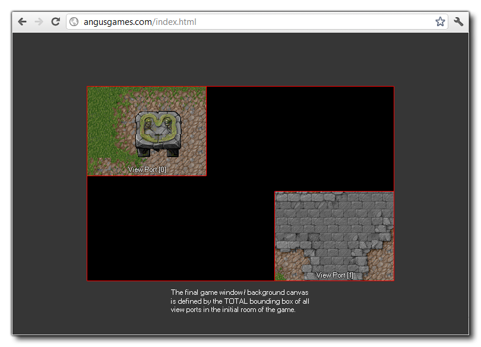
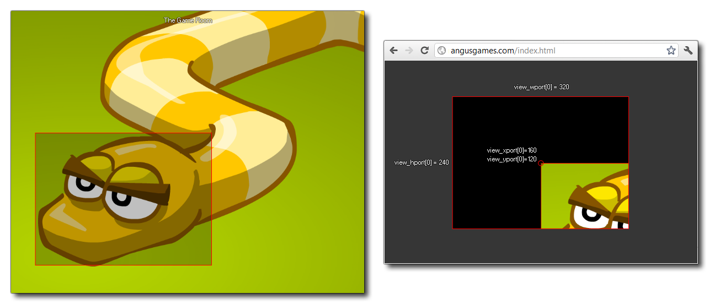

Con este conjunto integrado, puede obtener o establecer la posición y del puerto de vista dado. El puerto de vista es el área en la pantalla donde se dibuja la vista, y puede tener hasta 8 activos en cualquier momento (la matriz tiene valores de 0 a 7 inclusive para dar 8 puertos). Ahora, el valor predeterminado para GameMaker Studio 2 es que la ventana del juego (o lienzo de fondo) tiene el mismo tamaño que la habitación, sin embargo, cuando activa puertos de vista y cámaras, este comportamiento cambia y el tamaño total del cuadro delimitador para todos los puertos de visualización es usado. Entonces, si tiene dos puertos de vista diferentes en dos posiciones diferentes, el área total que cubre define el tamaño de la ventana del juego. La siguiente imagen ilustra esto:

Si solo tiene una configuración de puerto de visualización, el valor xoy del puerto puede tener algunos efectos interesantes pero normalmente no es práctico (vea la imagen a continuación) y por lo tanto es mejor mantener la posición xey como (0,0).

view_yport[0 .. 7];
Real
view_xport[0] = 0;
view_yport[0] = 0;
El código anterior restablece la posición del puerto de visualización [0] a la posición (0,0) (esquina superior izquierda) de la pantalla.